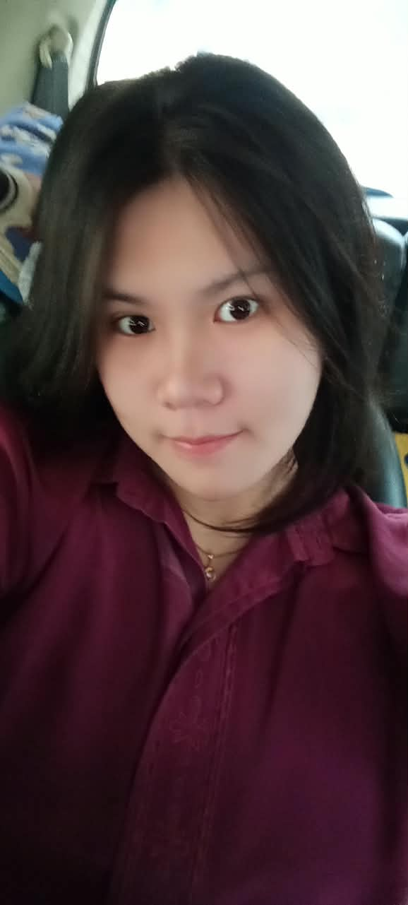
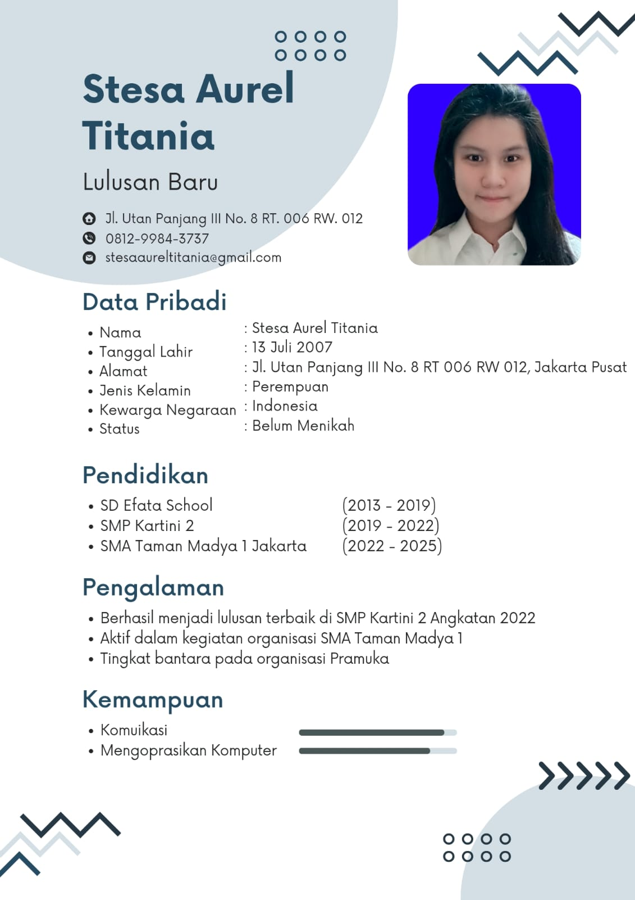

Tentang Saya

Nama: Stesa Aurel Titania
NIM: 535250074
Kelas: B
Angkatan: 2025
Program Studi: Teknik Informatika
Deskripsi Singkat: Mahasiswi yang saat ini sedang menempuh pendidikan S1 di Universitas Tarumanagara, bersemangat dalam mempelajari perancangan tampilan web modern, antarmuka interaktif, dan logika pemrograman dasar. Memiliki rasa ingin tahu yang tinggi mengenai banyak hal baru.
Keahlian & Minat
- Pengembangan Tampilan Web Front-End (HTML5, CSS3, & Desain Responsif)
- Logika Algoritma Dasar & Pemecahan Masalah Pemrograman
- Desain Antarmuka Pengguna (UI/UX Design & Prototyping)
Portofolio & Fakta Unik

Fakta Unik Tentang Saya
- Lebih produktif saat malam hari dan suasana yang tenang.
- Suka dengan rasa asin gurih yang berlebihan (di atas rata-rata normal).
- Lebih fokus koding sambil mendengarkan musik pop atau instrumental.
Kontak & Tautan Luar
Silakan hubungi atau kunjungi profil saya melalui tautan berikut:
- GitHub: github.com/stesaaureltitania-lgtm
- Email: stesaaureltitania@gmail.com
- Instagram: @stesaaurel0707